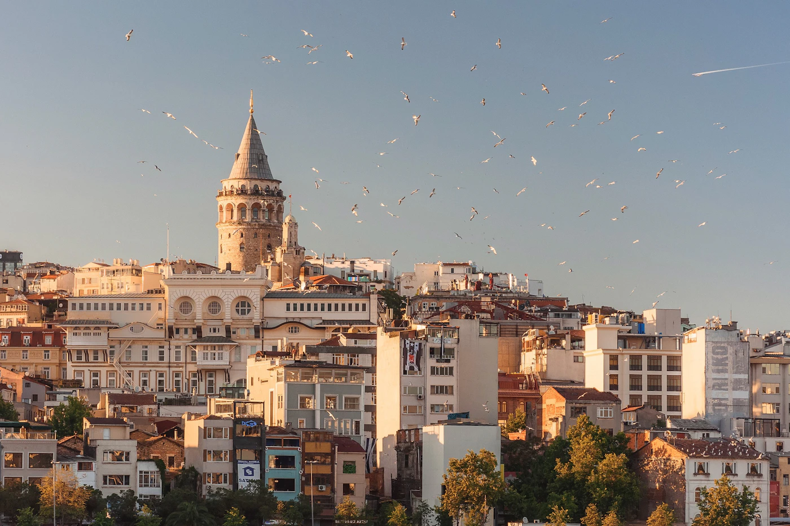
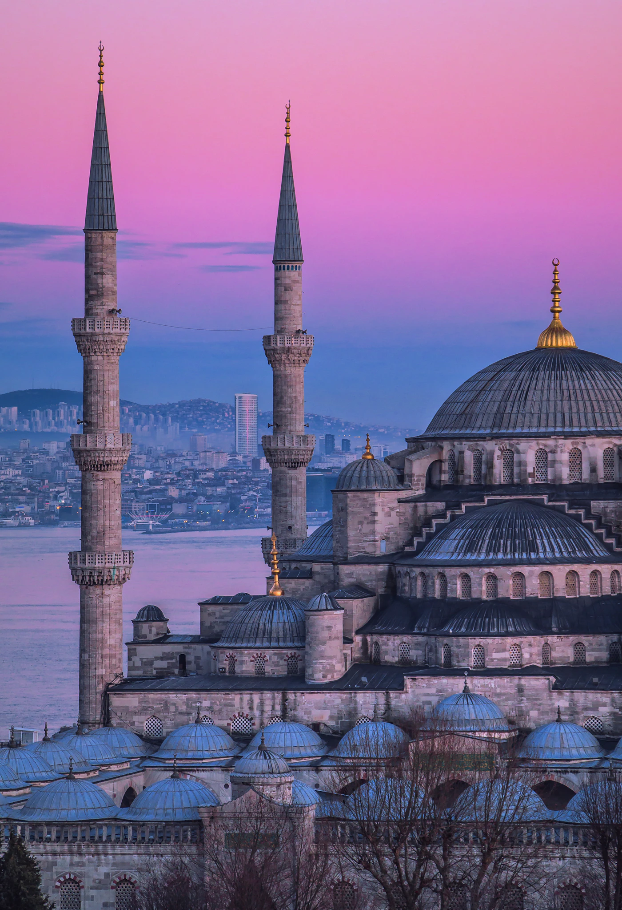

Reiseführer / Istanbul
Istanbul — beste Reisezeit, Flughafen, Bosporus, Sehenswürdigkeiten

Wann nach Istanbul reisen — die beste Zeit ohne große Menschenmassen
Frühling (April–Mai) und Herbst (September–Oktober) sind ideal — milde Temperaturen, weniger Touristen als im Sommer und das beste Licht für Fotos vom Bosporus. Der Sommer (Juli–August) ist heiß und am vollsten, besonders rund um Sultanahmet. Der Winter ist mild, aber regnerisch, gut für Museen und Innenattraktionen bei etwas niedrigeren Unterkunftspreisen. Wenn du während des Ramadan reist, denk daran, dass manche Lokale und Öffnungszeiten anders sein können.
Flughafen in Istanbul — IST oder SAW, und der Weg ins Zentrum
Istanbul hat zwei Flughäfen. Istanbul Airport (IST) ist größer und neuer, auf der europäischen Seite, etwa 40 km vom Zentrum entfernt — ins Zentrum kommt man mit dem Havaist-Bus oder einer Kombination aus Metro (M11 dann M2). Sabiha Gökçen (SAW) liegt auf der asiatischen Seite, oft mit günstigeren Flügen von Billigfluggesellschaften, mit dem Havabus-Bus ins Zentrum. Taxi/Uber gibt es an beiden Flughäfen, aber die Fahrt ist bei Verkehr länger und teurer. Innerhalb der Stadt ist die Fähre (Vapur) zwischen der europäischen und der asiatischen Seite günstig, schnell und Teil des Alltagslebens — es lohnt sich, sie mindestens einmal wegen des Ausblicks auf die Stadt zu nutzen.
Was eine Reise nach Istanbul kostet — Richtpreise
- Istanbulkart — eine Karte für den gesamten öffentlichen Nahverkehr (Metro, Bus, Fähre), erhältlich am Kiosk oder Automaten; viel günstiger als einzelne Taxifahrten.
- Museumseintritte (Topkapi-Palast, Basilika-Zisterne, Museumsteil der Hagia Sophia) — die Preise ändern sich von Jahr zu Jahr, rechne mit etwa 25-30 € insgesamt, wenn du alle Hauptattraktionen planst; das Innere der Blauen Moschee ist kostenlos.
- Essen in einem lokalen Lokal — 8-15 € pro Person abseits der Touristenzone; in Sultanahmet selbst sind die Preise für ähnliches Essen deutlich höher.
- Fischsandwich (balık ekmek) an der Galata-Brücke — eines der günstigsten und authentischsten Gerichte der Stadt, für nur ein paar Euro.
Sehenswürdigkeiten in Istanbul in 3-4 Tagen
- Hagia Sophia und Blaue Moschee — einander gegenüber in Sultanahmet, geh früh morgens hin, um die größten Menschenmassen zu vermeiden.
- Topkapi-Palast — ehemalige Residenz der osmanischen Sultane, plane einen halben Tag für einen ausführlicheren Besuch ein.
- Großer Basar und Gewürzmarkt — Feilschen ist üblich, behalte einen Richtpreis im Kopf, bevor du ins Gespräch einsteigst.
- Bootsfahrt auf dem Bosporus — die beste Möglichkeit, beide Kontinente und die Brücken zu sehen, unbedingt mindestens einmal beim Besuch einplanen.
- Galata-Turm und -Brücke — Blick auf das Goldene Horn und die Altstadt, ein guter Ort für den Sonnenuntergang.

Wo man in Istanbul essen sollte — lokale Speisen zum Probieren
Für ein besseres Preis-Leistungs-Verhältnis und authentischeren Geschmack meide Restaurants direkt rund um Sultanahmet und geh nach Karaköy oder auf die asiatische Seite. Unbedingt probieren: Simit (türkisches Sesamgebäck) von Straßenständen zum Frühstück, Lahmacun und Kebab in lokalen Lokanta-Restaurants, Balık ekmek an der Galata-Brücke und ein Abendessen mit Meze und Rakı im Viertel Karaköy. Türkischer Kaffee und Baklava sind der obligatorische Abschluss jeder Mahlzeit.
Geheimtipps in Istanbul abseits der Hauptrouten
- Balat — buntes Viertel mit alten Häusern und Gassen, bei Fotografen immer beliebter, aber noch weniger überlaufen als Sultanahmet.
- Çukurcuma — Viertel mit Vintage-Läden und Antiquitätengeschäften, gut für einen ruhigeren Spaziergang.
- Kadıköy — die asiatische Seite der Stadt mit lokaler, weniger touristischer Atmosphäre, ausgezeichnete Märkte und Cafés.
- Pierre-Loti-Hügel — Seilbahn zu einem Aussichtspunkt mit Blick auf das Goldene Horn, bei Touristen, die nur in Sultanahmet bleiben, weniger bekannt.
Praktische Tipps vor der Buchung
- Visum — die Türkei gehört nicht zur EU; die Einreisebestimmungen (e-Visa oder visumfrei) hängen von der Staatsangehörigkeit ab, prüfe sie vor der Reise.
- Bargeld — türkische Lira sind nützlich für kleinere Geschäfte, Stände und Märkte, wo Karten nicht immer akzeptiert werden.
- Feilschen — üblich auf Basaren und Märkten, nicht in gewöhnlichen Geschäften oder Restaurants mit Festpreisen.
Plane deine Reise nach Istanbul mit SKLOPI →